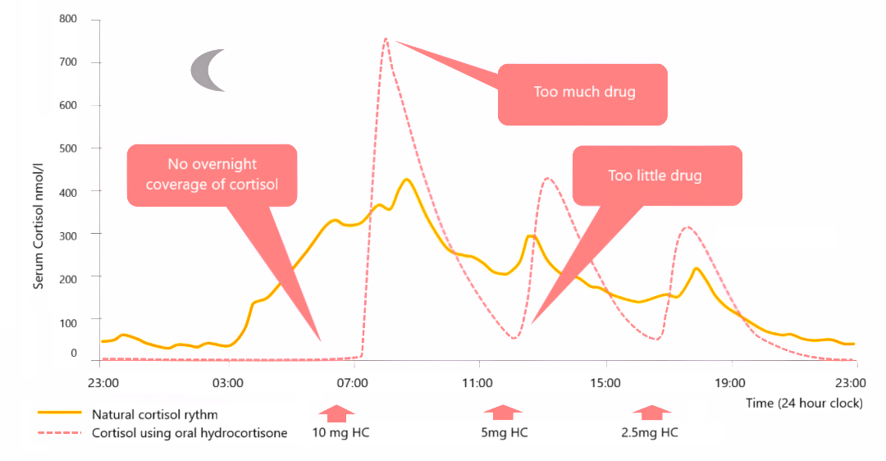

What Your Body Needs vs. What You Actually Get

Collaborative research initiative developing accessible, circadian-matched cortisol delivery technology for patients worldwide
This isn't living - it's surviving. Every single day.
Matches your body's natural rhythm, eliminating both dangerous spikes and life-threatening crashes
No more roller coaster - continuous, controlled hormone delivery throughout the day
High cortisol in morning, low at night - just like your body is designed to work
Your body can respond to stress, illness, and injury with proper cortisol levels
Proper nighttime cortisol levels allow for natural, restorative sleep cycles
No crashes, no spikes - consistent energy levels throughout your day
More effective delivery means less medication needed for better results
| Feature | Oral Medications | Our Pump Solution |
|---|---|---|
| Delivery Pattern | ✗ Spikes and crashes | ✓ Smooth, continuous |
| Circadian Matching | ✗ No rhythm matching | ✓ Natural cortisol cycles |
| Emergency Response | ✗ Impaired stress handling | ✓ Body ready for stress |
| Sleep Quality | ✗ Disrupted by high nighttime levels | ✓ Natural sleep cycles |
| Energy Levels | ✗ Unpredictable highs and lows | ✓ Stable throughout day |
| Medication Amount | ✗ Higher doses needed | ✓ Lower, more effective doses |
| Accessibility | ✗ Limited by cost and availability | ✓ Open-source, 3D printable |
Freely modifiable code allowing global collaboration and customization for individual patient needs.
Low-cost manufacturing using standard 3D printers, making the technology accessible worldwide.
Dosing schedules based on ultradian cortisol cycles, following protocols from Løvås, Nella, and Russell research.
Recent research demonstrates the transformative impact of hydrocortisone pumps on patient outcomes:
Studies by Oksnes, Løvås, and Gagliardi show restoration of morning ACTH and cortisol to physiological ranges.
Research by Løvås, Tiwari, and Cardini demonstrates decreased frequency of adrenal crises and hospitalizations.
Patients report increased vitality, functionality, and overall satisfaction with pump therapy across multiple studies.
Inspired by Fawzi and Payne's 3D printable insulin pumps, we're developing open-source hydrocortisone delivery technology that matches ultradian cortisol rhythms.
Help us make life-saving technology accessible to patients worldwide